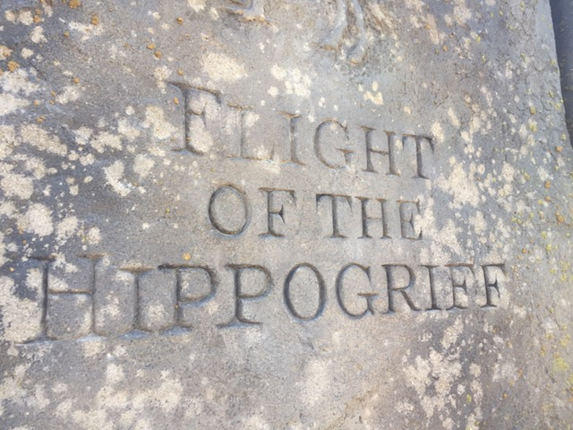

| |
Flight of the Hippogriff Review

We're here at Universal Studios Hollywood where's we'll be revewing their Roller Skater. Flight of the Hippogriff. Now this is a different Roller Skater as this is actually a Mack Roller Skater. I'm not sure why they went with Mack and not just Vekoma like everyone else since it is essentially the exact same ride, only built by Mack. Now, I like these rides. And this is the Big Model. So I like it even more. Anyways, lets get moving. We pull down the lap bar, and we're off. We go around a turn, climb the lifthill, and go down the curved first drop. Wee!! We've got some speed now. We go around a curve and slightly turn up before dipping back down towards the ground. We rise up, go through a turnaround, and dip back down. We rise up, go through another helix back down towards the ground. We roll through another turn and into the brake run. With these large Roller Skaters, these are the coasters where I start to think to myself, "Is this a kiddy coaster?". Seriously, this is the area where the line starts to get fuzzy. But hey, I enjoy these rides and wouldn't mind taking another spin.
4/10
Location: Universal Studios Hollywood
Opened: 2016
Built by: Mack
Last Ridden: January 8, 2017
Flight of the Hippogriff Photos


Home
|